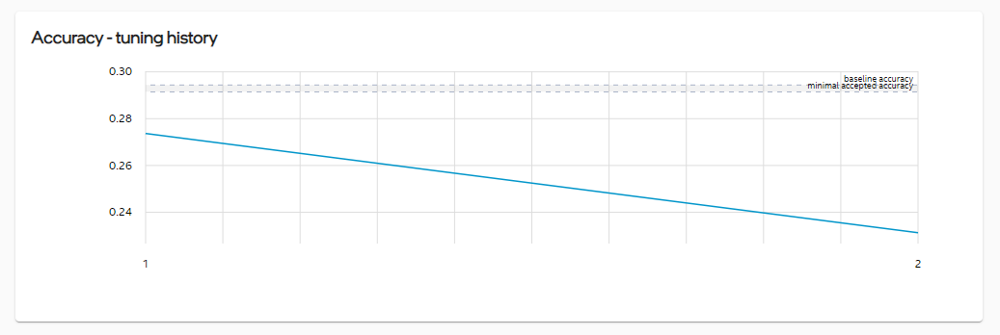
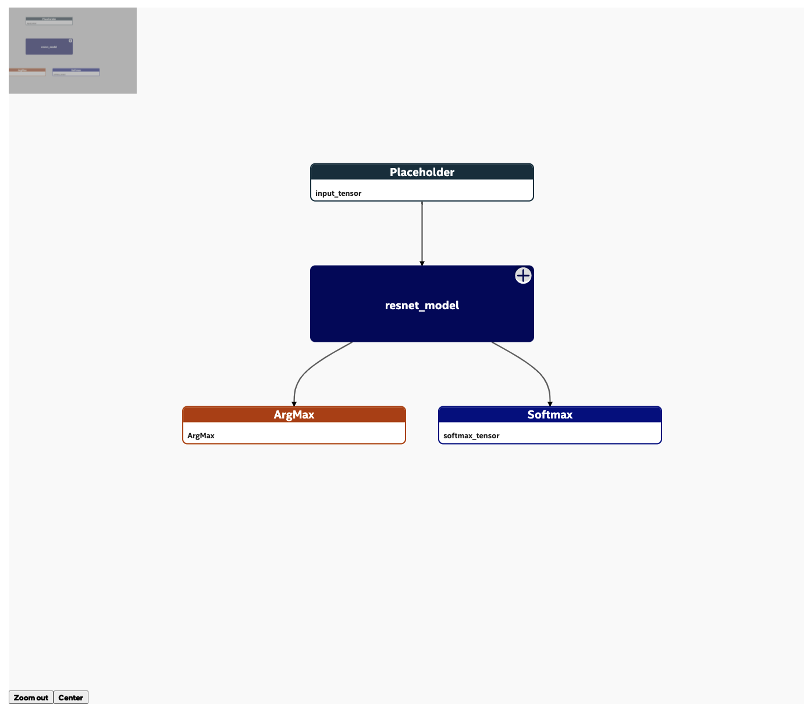

Resnet 50 v1
SSD Resnet 50
Optimizations
| Optimization1 |
Quantization |
int8 |
dummy |
78.90% |
427.93 FPS |
25 MB |
|
| Optimization2 |
Graph optimization |
fp32 |
dummy |
- |
- |
48 MB |
|
| Optimization3 |
Quantization |
int8 |
MyImageRecord |
- |
- |
- |
|
Results
|
78.90%
Accuracy [%]
|
427.93 FPS
Performance [sample/sec]
|
{{ model['size_optimized_model'] ? model['size_optimized_model'] : '-' }}
Size [MB]
|
Tuning parameters
| Strategy: |
basic |
| Accuracy goal: |
0.01 |
| Objective: |
performance |
| Timeout: |
0 |
| Max trials: |
100 |
| Random seed: |
9527 |

Accuracy - tuning history
Duration - tuning history
Benchmarks
| Input model |
fp32 |
MyImageRecord |
1 |
4 |
7 |
78.75% |
210.12 FPS |
|
|
| Optimization1 |
int8 |
dummy |
4 |
28 |
1 |
- |
437.12 FPS |
|
|
| Optimization1 |
int8 |
dummy |
8 |
14 |
2 |
- |
452.12 FPS |
|
|
| Optimization1 |
int8 |
MyImageRecord |
1 |
4 |
7 |
78,90% |
425.12 FPS |
|
|
| Optimization2 |
fp32 |
dummy |
32 |
7 |
4 |
- |
241.12 FPS |
|
|
| Optimization2 |
fp32 |
MyImageRecord |
1 |
4 |
7 |
- |
- |
|
|
Benchmark details
| Optimization: |
some details |
| Dataset: |
dummy |
| Iterations: |
100 |
| Configuration: |
Show config |
| Output: |
Show log |
| Execution command |
|
Profiling
| Input model |
fp32 |
|
| Optimization1 |
int8 |
|
| Optimization2 |
fp32 |
|
Profiling data
|
{{ row[header].run }}
|
{{ row[header].defined }}
|
{{ row[header] }}
|
|
Graph visualization
| Input model |
fp32 |
| Optimization1 |
int8 |
| Optimization2 |
fp32 |

Datasets
| dummy |
Dummy |
[300, 300, 3] |
| MyImageRecord |
Real data |
/dataset/ImageRecord_mini |
Dataset details
| Dataset type: |
ImageRecord |
| Dataset location: |
/path/to/dataset |
| Calibration sampling size: |
100 |
| Calibration batch size: |
100 |
Transforms
| height: |
224 |
| width: |
224 |
| random crop: |
|
| resize side: |
|
| mean value: |
123.68,116.78,103.94 |
Project details
| Project name: |
Resnet 50 v1 |
SSD Resnet 50 |
| Created at: |
25/11/2021 8:07 |
| Modified at: |
25/11/2021 15:03 |
| Domain: |
Image recognition |
| Size: |
50 MB |
| Input model path: |
{{ model['model_path'] ? getFileName(model['model_path']) : null }}

|
Notes